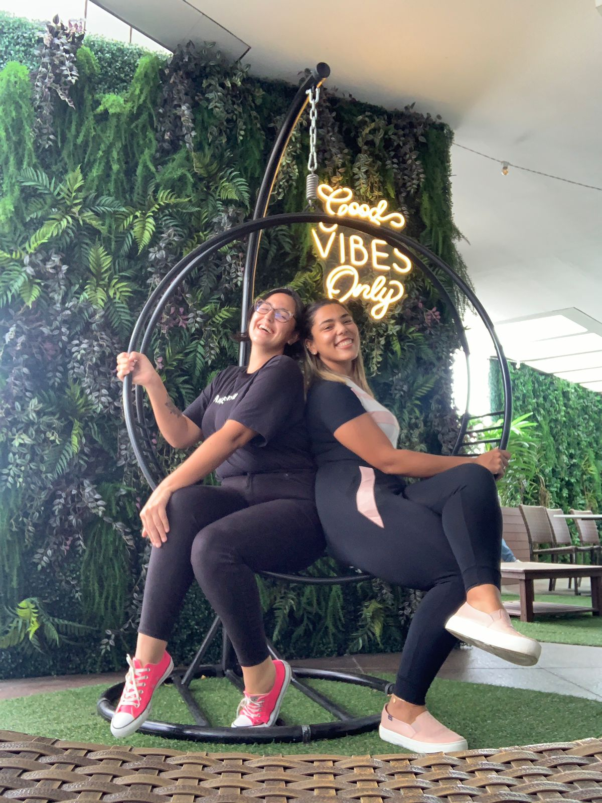

Na esquerda, @sameh_ferreira e na direita @giquadros , muito prazer! Somos duas professoras da educação infantil, colegas de trabalho que, num primeiro momento, ao se conhecerem não se deram muito bem, mas que com o passar do tempo e proximidade de nossas turmas tiveram que compartilhar seus cotidianos. E nessa vivência, passamos a ter intervalos de almoço no mesmo horário, nos quais descobrimos nosso gosto por café, em comum. E, diariamente, tínhamos o então “café terapêutico”, que era nossa pausa no meio do dia para descansar e desabafar, na loja de conveniência. E que, a partir de então, uniu dois mundos em um, numa forte amizade inseparável. Nesta amizade, que já se aproxima dos 5 anos, descobrimos outros tantos gostos e prazeres, mas ainda assim o café vem nos aproximando e nos permitindo compartilhar do dia a dia uma da outra. Neste ano, colegas de trabalho do mesmo andar, vimos então o quanto o “cafezinho” no meio do dia nos fazia bem e nos renovava para o restante do dia. Então, eu que vos escrevo, Giovanna, sabendo do talento para as artes que minha amiga Samantha possui e vendo o que ela já havia criado para uso pessoal, a convidei para a sociedade, nascendo assim o @minhacanecadebochada, fruto dessa linda, espontânea e louca amizade!
